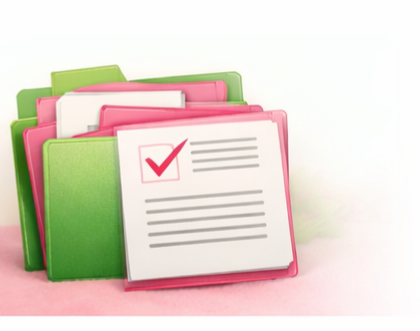

Tecnologia a serviço do cuidado feminino
O Viva Mulher nasceu para apoiar diretamente a saúde feminina em Saquarema. Mais do que um projeto tecnológico, é uma iniciativa dedicada ao bem-estar, à prevenção e ao cuidado integral da mulher.
Marque sua consulta online sem precisar ligar ou enfrentar filas.
Acompanhe suas consultas já marcadas e receba notificações de lembrete.
Canal direto de comunicação com a recepção da clínica.

Acesse seus exames digitalmente com segurança e praticidade.